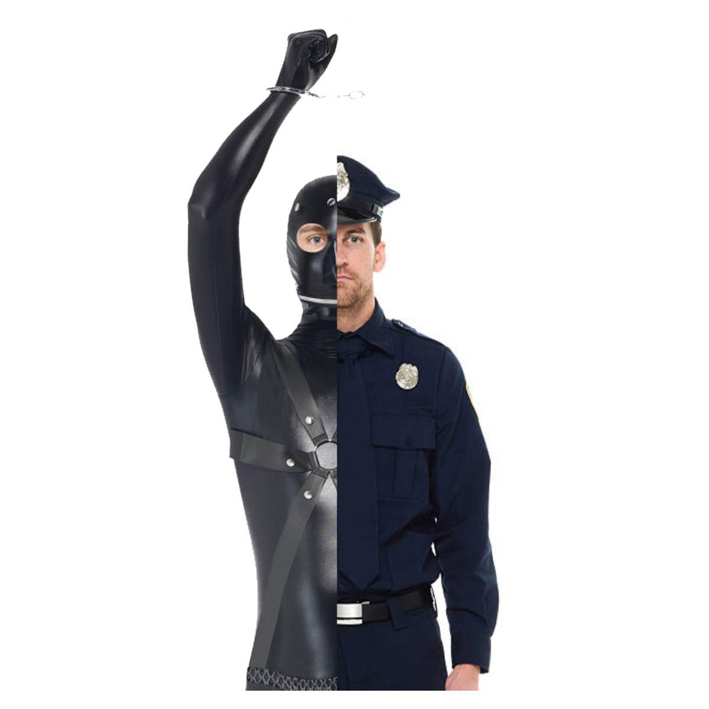

"submissively dominant man" / jpg images / oct 2017
a simple image of the same person in two different suits.
This image is to show 2 sides of the same man.
The face is from the same person, with 2 different outfits adjusted to look equal.
sitemap
1
2
3
4